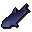

Raw cod
| Config name | raw_cod |
| Item id | 341 |
| Value | 25 gp |
| Weight | 450g |
| Members | Yes |
| Tradeable | Yes |
| Stackable | No |
| Defined in | scripts/skill_fishing/configs/fishing.obj |
Raw cod
I should try cooking this.
Used to make
| Skill | Level | XP | Ingredients | Tool | How | Where | Makes |
|---|---|---|---|---|---|---|---|
| Cooking | 18 | 75.0 | use on object | range or fire |  Codcan spoil into |
Sold at
| Shop | Shopkeeper | Stock |
|---|---|---|
| Harrys Fishing Shop. | 0 | |
| Fishing Guild Shop. | 0 |
Fishing
Level 23 with  Big fishing net, 45.0 xp. Caught at:
Big fishing net, 45.0 xp. Caught at:  Fishing spot (6 spawns),
Fishing spot (6 spawns),  Fishing spot (3 spawns)
Fishing spot (3 spawns)
Referenced in scripts
scripts/_test/scripts/cheats/cheat_bank.rs2scripts/levelup/scripts/levelup_unlocks_fishing.rs2scripts/skill_fishing/scripts/fishing_spots/memberfish.rs2